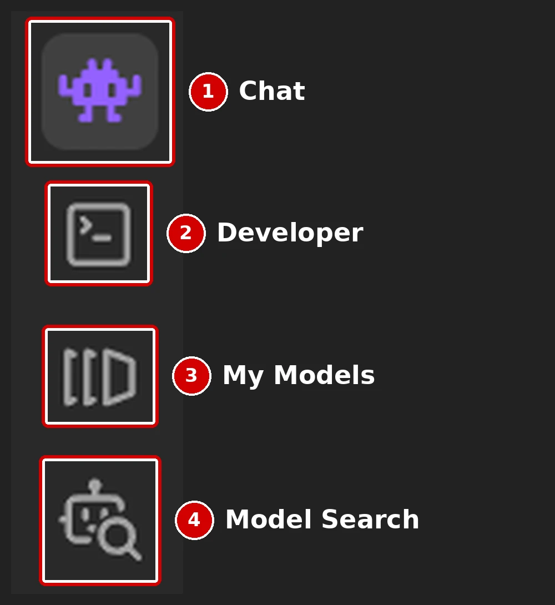
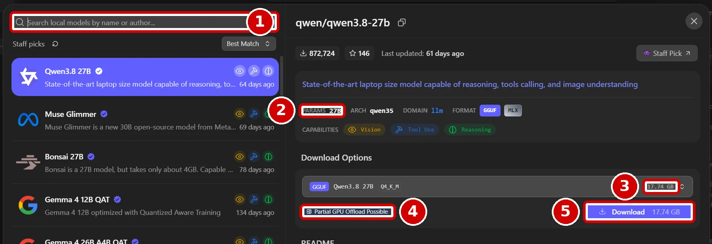
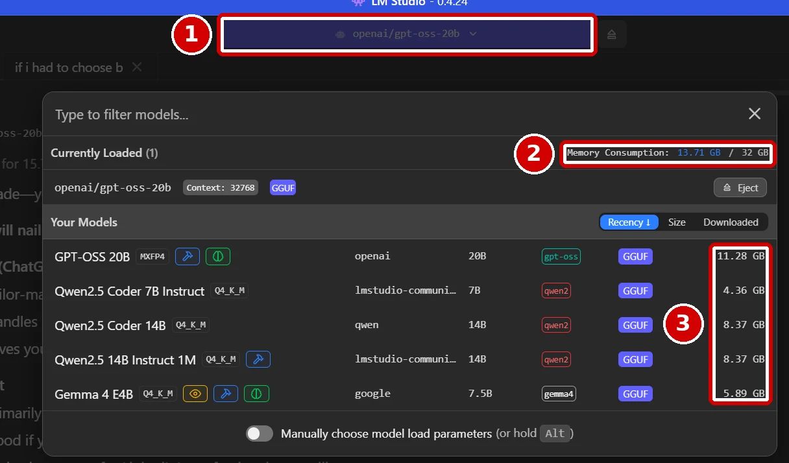
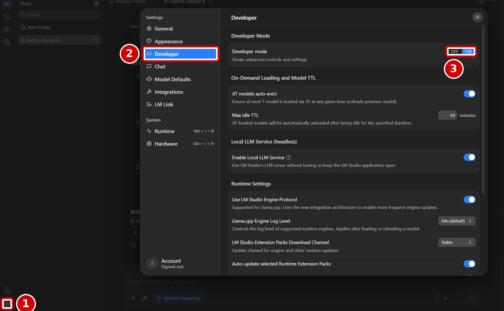
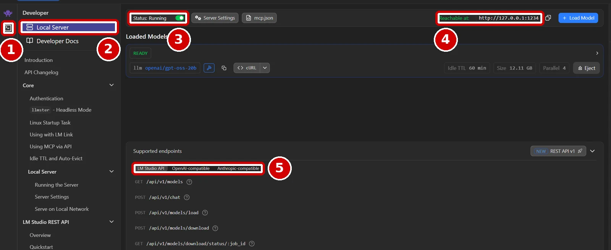

Most of the AI work my home automation teams do runs on a model on my own PC, not in the cloud. My website team's weekly review, my news digest and my assistant, which I named Wade, all talk to a local model through LM Studio, so none of that work costs me a penny in tokens. This guide shows you how to set up the same thing from scratch and get your first answer back in Python. The screenshots are from my own copy of LM Studio, and the red boxes show you exactly where to click.
Who this guide is for
This is for marketers and other non-developers who want to try AI on their own computer, keep their data at home, or automate small jobs without paying per request. You don't need to know how to code, because you will copy one short script and run it. By the end you will have a model running on your PC, a local server that other programs can talk to, and a Python script that sends it a question and prints the answer.
What you'll need
- A Windows PC with a graphics card, ideally. Step 1 shows you how to check how much memory your graphics card has, because that decides which models will run well.
- LM Studio, which is free. Step 3 gives you the right download link.
- Python, which is also free. Step 2 covers installing it.
- About 45 minutes, plus download time, because models are several gigabytes each.
Cost: nothing, because LM Studio and Python are both free.
A quick word on model sizes
You will see model names like GPT-OSS 20B or Qwen2.5 Coder 7B. The number with a B is the model's size in billions of parameters. Parameters are the numbers a model learned during training, and they are what it uses to work out its answers. As a rough rule, more parameters means a more capable model, but also a bigger download and more memory needed to run it. A 20B model has 20 billion parameters.
Models are usually shrunk for home use with a process called quantization. You will see labels like Q4_K_M next to a model, which means each parameter has been squeezed into about four bits. In practice, the download size LM Studio shows you is the best guide to how much memory the model needs.
Step 1: Check how much memory your graphics card has
The model has to fit into memory to run, and it runs far faster when it fits into your graphics card's own memory, called VRAM, rather than your PC's normal memory.
- Press Ctrl, Shift and Esc together to open Task Manager.
- Click the Performance tab. If you only see a small window, click More details at the bottom first.
- Click GPU in the left-hand list. If you have more than one, choose the one that isn't your processor's built-in graphics.
- Find Dedicated GPU memory in the details below the graphs. That number is your VRAM.
What you should see: a figure such as 8GB, 12GB or 16GB. Mine is an AMD Radeon RX 7800 XT with 16GB, alongside 32GB of normal system memory. Write your number down, because you will use it in Step 4.
Step 2: Install Python
Python is the programming language your script will use.
- Go to the official Python downloads page and click the yellow download button for Windows.
- Open the file you downloaded and follow the prompts. Python's Windows download has changed over the last year, so your screens may differ slightly from older guides. If you see a box labelled Add python.exe to PATH, tick it, because without it Windows can't find Python later.
- When it has finished, press the Windows key, type
PowerShell, and press Enter to open it. - Type
py --versionand press Enter.
What you should see: a line starting with the word Python followed by a version number. If you see that, Python is ready.
On Windows I always type py rather than python to run Python, because the Microsoft Store can grab the word python and open the Store instead of running your script. Every command in this guide uses py.
Step 3: Install LM Studio, not Bionic
LM Studio now makes two different apps, and the download page offers both. LM Studio is the classic app this guide uses, with the model library and the local server. Bionic is a newer, separate app from the same team, built as an AI agent. LM Studio's own announcement describes Bionic as a separate app and says you can keep using LM Studio alongside it for advanced configuration, so download the classic app for this guide.
- Go to the LM Studio download page.
- Click the button labelled Download LM Studio for Windows, which shows a version number, rather than the button for Bionic. The direct link is LM Studio for Windows.
- Open the file and install it like any other program, then open LM Studio.
What you should see: the LM Studio window, with a column of icons down the left-hand side. Here is what each one does, because you will use them in the next steps.

Step 4: Find a model that fits your PC
- Click the Model Search icon on the left, which looks like a robot with a magnifying glass, icon 4 in the picture above.
- Type a model name into the search box, marked 1 below, or browse the staff picks list.
- Click a model to see its details. Check its size in parameters, marked 2, and its download size, marked 3.
- Look at the badge under the download options, marked 4. LM Studio checks your hardware and tells you how well the model will fit.
- If it fits, click Download, marked 5, and wait for it to finish.

In my screenshot the model is 17.74GB and the badge says Partial GPU Offload Possible. That means it is too big for my 16GB graphics card on its own, so LM Studio would run part of it on the card and the rest in normal memory. It works, but it runs noticeably slower.
My simple rule is to pick a model whose download size is a few gigabytes smaller than your VRAM from Step 1, because the model needs some room to work as well. That is why my main model is openai/gpt-oss-20b, an 11.28GB download that fits comfortably on my 16GB card. For help with code I use qwen2.5-coder-7b-instruct, which is only 4.36GB. If you have 8GB of VRAM, start with a 7B or 8B model. Look for the word instruct in the name, because those models are built to follow instructions.
Step 5: Load the model and chat with it
- Click the Chat icon on the left, icon 1 in the Step 3 picture.
- Click the model picker at the top of the window, marked 1 below, and choose the model you downloaded. The first load can take a minute.
- Once it has loaded, type a message such as "say hello" in the box at the bottom and press Enter.

What you should see: a reply appears in the chat. The picker also shows Memory Consumption, marked 2, so you can see how much memory the loaded model is using, and box 3 lists the size of every model you have downloaded. If you get a reply, the model works on your machine, and everything from here is about letting other programs use it.
Step 6: Switch on Developer mode
The local server lives in LM Studio's developer tools, which are hidden until you switch them on.
- Click the Settings cog at the very bottom of the left-hand icons, marked 1 below.
- In the Settings window, click Developer in the left-hand list, marked 2.
- Next to Developer mode, click ON, marked 3, so it turns blue.
- Close the Settings window with the X in its top right corner.

Step 7: Start the local server
- Click the Developer icon on the left, which looks like a square box with a small arrow, like a triangle, inside it, marked 1 below.
- Click Local Server at the top of the menu, marked 2.
- Click the switch next to Status, marked 3, so it shows Status: Running.
- Check the address next to Reachable at, marked 4. Mine is
http://127.0.0.1:1234. The127.0.0.1part is your own PC, which programs also calllocalhost, and1234is the port number.

Box 5 shows the types of connection LM Studio supports: its own LM Studio API, OpenAI-compatible and Anthropic-compatible. The OpenAI-compatible option is the one this guide uses. It means LM Studio understands the same requests as OpenAI's service, which is why so many tools can use it.
Step 8: Check the server from PowerShell
Before writing any code, prove the server answers.
- Press the Windows key, type
PowerShell, and press Enter. - Copy this command, paste it into PowerShell, and press Enter:
(Invoke-RestMethod -Uri "http://localhost:1234/v1/models").data.idWhat you should see: a list of your models' identifiers, one per line, such as openai/gpt-oss-20b. Write down the one you want to use exactly as shown, because your script must match it letter for letter.
Step 9: Install the one library you need
- In the same PowerShell window, paste this command and press Enter:
py -m pip install requestsrequests is a small, popular library for talking to web addresses, and it is all you need here. When it finishes, you will see a line starting with Successfully installed, or a message saying it is already installed.
Step 10: Write and run your first script
- Open Notepad and paste in the script below.
- Change the
MODELline to the identifier you wrote down in Step 8. - Click File, then Save as. Set Save as type to All files, name it
ask_local_ai.py, and save it in a folder you can find, such asC:\Projects\local-ai.
import sys
import requests
sys.stdout.reconfigure(encoding="utf-8", errors="replace")
URL = "http://localhost:1234/v1/chat/completions"
MODEL = "openai/gpt-oss-20b"
question = "Give me three ideas for a blog post about PPC reporting."
response = requests.post(URL, json={
"model": MODEL,
"messages": [
{"role": "system", "content": "You are a helpful marketing assistant. Answer in British English."},
{"role": "user", "content": question},
],
"temperature": 0.3,
}, timeout=400)
if response.status_code >= 400:
print("LM Studio said:", response.text[:1000])
response.raise_for_status()
print(response.json()["choices"][0]["message"]["content"])- In PowerShell, move into that folder by typing
cd C:\Projects\local-aiand pressing Enter. - Run the script by typing
py ask_local_ai.pyand pressing Enter.
What you should see: after a short wait, three blog post ideas print in the window. That is your PC answering, with nothing sent to the cloud.
A few lines in that script are there because of problems I hit, and they are worth keeping. The sys.stdout.reconfigure line stops a crash on Windows when the answer contains characters such as curly quotes or emoji. The timeout=400 setting gives the model time to finish, because local models are slower than cloud ones. Printing response.text when something fails shows you LM Studio's own explanation, which is far more useful than a bare error code.
Step 11: Make it useful
Once the basic script works, change the question line to something you do every week, such as summarising a pasted report or tidying up a list of keywords. My website team reads its own data files, puts them into the question, and asks the local model to spot what changed, and that whole review runs every Friday evening without costing anything.
My biggest disappointment with local AI is that the really strong models need much better hardware than most of us have at home. The models that do fit are still more than good enough for everyday jobs like these.
If it goes wrong
- "400 Client Error: Bad Request". This was my most stubborn error. The script above prints what LM Studio actually says. In my case the cause was a model identifier that didn't match exactly, so compare the
MODELline with the list from Step 8. - "Connection refused", or the script waits forever. The server isn't running or no model is loaded. Check Status: Running on the Local Server page from Step 7, then run the check in Step 8 again.
- There is no Developer icon. Developer mode is off. Switch it on as in Step 6.
- A crash mentioning "UnicodeEncodeError" or "charmap". Windows is trying to print characters it doesn't expect. Keep the
sys.stdout.reconfigureline in your script. If one script runs another, also set the environment variablePYTHONIOENCODINGtoutf-8for the one being run, which fixed crashes across my whole website team. - Answers are painfully slow. The model is probably too big for your graphics card, so LM Studio is running part of it in normal memory. Go back to Step 4 and choose a smaller model.
pyisn't recognised. Python isn't installed properly. Close PowerShell, run the download from Step 2 again, tick Add python.exe to PATH if you see it, then open a new PowerShell window and trypy --versionagain.
Stuck? Copy this prompt into an AI assistant
If something isn't working and the list above doesn't fix it, paste this prompt into Claude, Copilot or ChatGPT. Fill in the square brackets, and attach a screenshot of LM Studio or the PowerShell window.
I am following a beginner's guide to run a local AI model in LM Studio on Windows and call it from a Python script.
I am not a developer, so please explain each fix in simple numbered steps and tell me exactly where to click or what to type.
Where I am stuck: [which step, for example "Step 10, running py ask_local_ai.py"].
The exact error or what I see: [paste the full error message from PowerShell].
My setup: Windows [10 or 11], graphics card [name] with [number]GB of VRAM, LM Studio version [shown at the top of the window], model [identifier from Step 8].
The Local Server page says: [Status: Running or not, and the Reachable at address].
What I have already tried: [anything you have changed].
Ask me questions if you need more information before suggesting a fix.Where to go next
If you want the bigger picture of why I run AI at home, read why I run AI at home, and LM Studio tips for beginners. For the cost side, local AI without the token bill explains what running locally saves, and build your own local AI assistant shows how I turned this into Wade.
Sources
- LM Studio: Download page
- LM Studio Blog: Introducing LM Studio Bionic
- LM Studio Docs: OpenAI compatibility endpoints
- LM Studio Docs: Local server
- Python: Downloads
- NVIDIA Blog: How to accelerate larger LLMs locally with LM Studio
- Python Requests: Quickstart